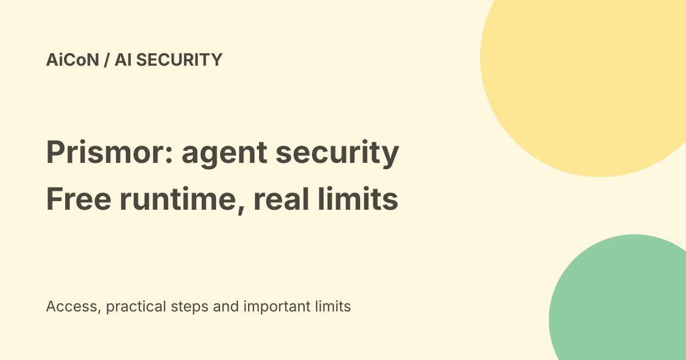

Prismor: a security checkpoint for AI coding agents
Prismor checks actions from supported AI coding agents before those actions run. It can record, allow or block them according to a policy. The local runtime is free and open source; the hosted dashboard is a separate paid service.

What does Prismor do?
A coding agent can read files, run shell commands or contact services. Prismor is a checkpoint between supported agents and these actions. The project describes command checks, prompt-injection detection, secret protection, agent permissions and a local audit trail. Prompt injection means content such as a page or file tries to make an AI follow instructions that the owner did not give.
The documentation lists hooks for coding tools including Claude Code, Cursor and Codex, with adapters for agent frameworks. A hook is a connection that lets Prismor inspect a tool call. Support does not mean every feature behaves identically in every agent. Check the adapter and version you actually use.
Free runtime versus paid platform
| Local runtime | Apache 2.0 open source, $0, no account needed for the local tier. |
|---|---|
| Starter | First month free, then $15/month for one user and up to five agents. |
| Monthly Starter limits | 100,000 tool-interception events and 1,000 skill scans. |
| Hosted history | 30 days in Starter. |
| Enterprise | Custom price and scope. |
Starter adds a live dashboard, MCP gateway and hosted controls. MCP is a standard way for an AI client to call connected tools. The pricing FAQ says hosted events pause beyond the monthly cap, while local policy enforcement continues. Check billing terms and taxes before subscribing; the free first month is not a permanently free hosted plan.
How to start carefully
- Read the official repository and the adapter instructions for your coding agent. Start in a disposable test project, not your important work folder.
- Install the package using the documented command
pip install prismor, then runprismor setup. - In the setup wizard, choose your mode, agents, install scope and secret-protection options. Review any optional model or hosted connection before turning it on.
- Restart your shell, run
prismor statusand confirm that the expected agent hooks are present. - Run
prismor auditto inspect coverage. Test a harmless sample action and confirm the expected warning or block. Inspect findings before extending it to real projects.
We did not install the runtime, change agent settings or run security tests. These are documentation-based steps, not a tested walkthrough on your computer.
Observe is different from enforce
The CLI documents observe and enforce modes. Observe lets you study activity; it should not be mistaken for a promise to stop harmful calls. Enforce can block calls under the selected governance and rules. Confirm how your chosen agent handles missing hooks, failures and secret replacement. A dashboard showing activity is evidence of logging, not proof of full protection.
Keep normal backups and least-privilege permissions. Test false alarms and missed actions. Do not loosen a rule only because an agent says it needs broader access.
Privacy and India use
The free-tier pricing page says its local runtime runs on your machine with a local audit trail. Optional hosted enrollment, telemetry routing and model-assisted checks have different data paths. Review those settings before assuming every possible setup is local-only. Logs can include sensitive work context even if secret-shaped values are masked.
No India-specific signup guarantee or rupee price was confirmed. The open-source code is available from the official repository, but local compatibility and hosted access were not tested in India. A connected AI model may have separate fees.
Frequently asked questions
Is Prismor free?
The local runtime is free. The hosted platform has paid plans.
Does it stop every attack?
No. Coverage, policies and agent integration determine what it can inspect and stop.
Does a local dashboard require Starter?
The CLI also documents a local dashboard. Do not confuse it with paid hosted history and management.
What changed since the earlier post?
This guide adds current Starter limits, separates observe from enforce and explains the local-versus-hosted boundary. It avoids turning vendor detection features into a claim that all agent actions are safe.
Sources: Official repository · Current pricing · Setup documentation · CLI reference. Checked 7 October 2026.